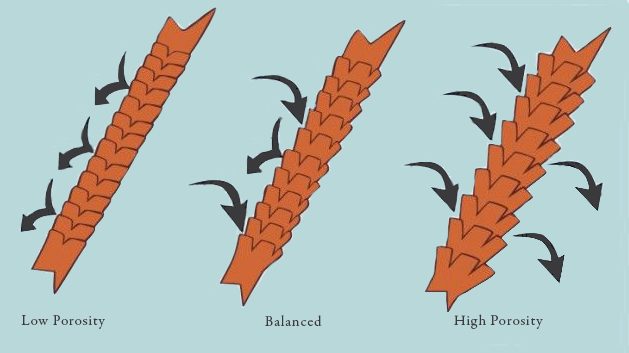
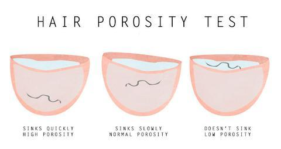

Hair Porosity
Hair porosity refers to how well your hair can absorb and hold moisture. This is affected by the outer layer of the hair called the cuticle, which determines how easily moisture and oiks pass in and out of the hair. Hair porosity is effected by things such as heat treatments and chemical processing. Knowing your hair's porosity can help you choose the right products to keep your hair well-moisturized and happy!
Float Test
Take a few strands of hair from a comb or brush and drop it in a cup of water. Let the strand of hair sit for 2-4 minutes, If your hair floats, you have low porosity. If it sinks, you have high porosity
Slip 'n' Slide Test
Take a strand of hair and slide your fingers from the tip of your hair to the root. If you feel little bumps along the way, this means your cuticles are lifted and that you have high porosity. If your fingers slip smoothly then you have low porosity hair.